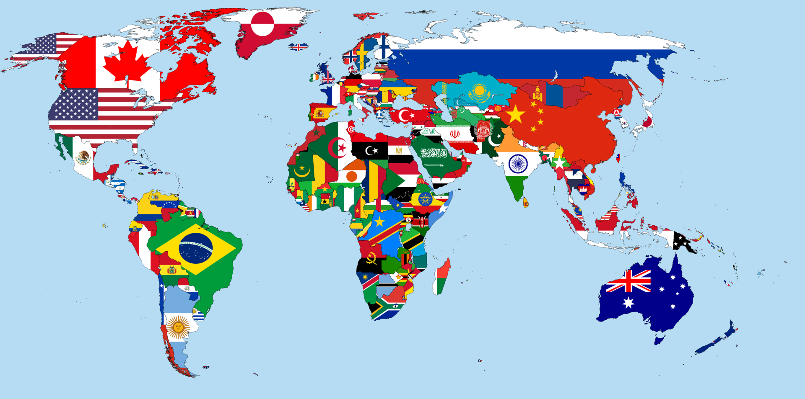

СНГ |
Большая семёрка |
Страны мира
|
Евразия | ||
|---|---|---|---|---|---|
|
Содру́жество Незави́симых Госуда́рств (СНГ) —
международная организация, призванная регулировать отношения сотрудничества между государствами, ранее входившими в состав Союза ССР |
Неформальный
международный клуб в
составе
семи экономически наиболее развитых государств. |
|
ЯЗЫКИ
|
||
|
|
Русский язык — язык восточнославянской группы славянской ветви индоевропейской языковой семьи, национальный язык русского народа. Является одним из наиболее распространённых языков мира — шестым среди всех языков мира по общей численности говорящих и восьмым по численности владеющих им как родным. Русский является также самым распространённым славянским языком и самым распространённым языком в Европе — географически и по числу носителей языка как родного. Русский язык — государственный язык Российской Федерации, один из двух государственных языков Белоруссии, один из официальных языков Казахстана, Киргизии и некоторых других стран, основной язык международного общения в Центральной Евразии, в Восточной Европе, в странах бывшего Советского Союза, один из шести рабочих языков ООН, ЮНЕСКО и других международных организаций. | |||